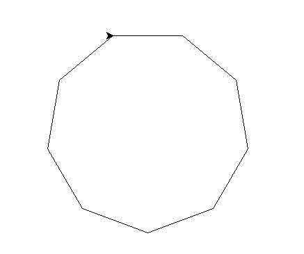

Here is a polygon constructed from word frequencies. To get this polygon, I first calculated the average of the word frequencies. Then, using this number, I calculated the sum of the internal angles of the shape and then divided this by the number of angles to find the measure of each individual angle. Now, I could use turtle to construct a regular polygon since I knew how many sides the shape will have and the measure of each angle.
You can see that a nonagon was drawn by the turtle. This means that there are nine equal sides and nine equal angles. Each angle measures 140 degrees. This also implicitly shows that the average word frequency is approximately 9.